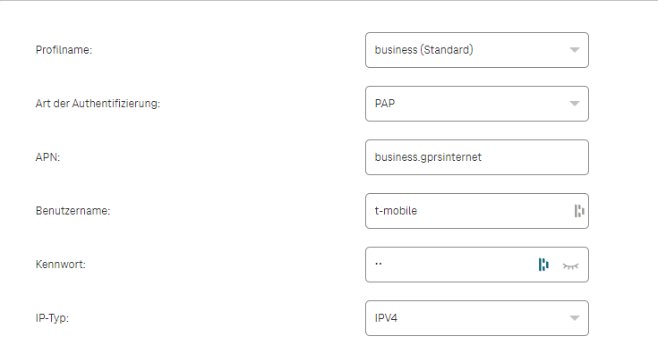
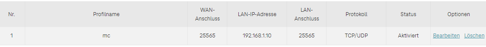

Guten Tag,
Ich versuche seit Monaten einige Dienste von meinem Privaten Netz ins Öffentliche zu bekommen...
Beispielsweise den Port 25565 für einen Minecraft-Server o.Ä.
Habe jetzt einen Nagelneuen Internet Flex Box AX3000 bekommen, leider funktioniert auch hier die Weiterleitung nicht(davor hatte ich einen gebrauchten Magenta Cube und eine Wertkarte.
Was hab ich gemacht?
Freigabe der Ports auf der Windows Firewall...
Server gestartet(intern erreichbar)
Profil auf business:

Portweiterleitrung:

Neustart des Routers und des PCs
Bitte um Hilfe, LG Fabian...
Hi
@Fabian Marktler
Das würde soweit gut aussehen.
Stimmt die WAN-IP-Adresse des Routers mit jener auf z.B.
https://api.ipify.org/
überein?
Testest du die Verbindung mit der WAN-IP-Adresse des Routers über einen anderen Internet-Anschluss? Weil nicht alle Router unterstützen NAT-Loopback, also das kontaktieren eines Gerätes im eigenen Heimnetzwerk mittels Portweiterleitung über die WAN-IP-Adresse des Routers. Deswegen unbedingt mit einem anderen Gerät über einen anderen Internet-Anschluss testen.
Der PC hat auch weiterhin die 192.168.1.10 als IP-Adresse? Am besten eine
Hast du vielleicht ein Internet-Schutz Zusatzpaket (unbewusst) gebucht?
Mit der Bemerkung „auch hier“ möchtest du sagen, dass es hat auch mit dem alten Setup nicht funktioniert?
Wenn es mit dem alten Setup auch nicht funktioniert hat, dann würde dies auf einen Fehler in deinen Tests oder in der Serverkonfiguration hindeuten.
LG NTM
Hallo, ich denke ich habe das Problem bei mir gerade lösen können...
Bei mir ging es um einen Loxone-Miniserver.
Ich habe die Port-Freigabe bei der FlexBox AX3000 wie du vorgenommen und es hat nicht funktioniert... nach langem herumprobieren (4h) habe ich dann am Router noch zusätzlich unter => Sicherheit => ACL => Schnittstelle HTTPS für den entsprechenden IP-Adressbereich (wenn es nur eine Adresse ist musst du trotzdem von - bis eingeben also z.B.: 192.168.1.1234 - 192.168.1.1234) aktiviert
Jetzt funktioniert alles => ich kann jetzt mit allen Geräten ohne im WLAN zu sein auf meinen Miniserver zugreifen...
Ich hoffe ich konnte dir helfen und es funktioniert bei dir auch so wie bei mir
")
MfG
Johannes
Guten Tag,
Die Server Adresse "192.168.1.10" ist im DHCP Statisch eingetragen, daher kann sich die nicht verändern(habs auch schon mit einer statischen IP ohne DHCP-Server des Routers getestet).
Stimmt die WAN-IP-Adresse des Routers mit jener auf z.B. https://api.ipify.org/ überein?
ja, sind die selben Adressen!
Beim alten router hat es genau 1 mal funktioniert und dann nach einigen tests plötzlich nicht mehr. (hab den innerhalb des WLANs das über den besagten router und per hotspot von meinem Handy getestet. Nach einem Neustart, wegen weiteren tests wars dann vorbei. Jetzt mit dem neuen Router haut leider gar nix mehr bzgl. Portweiterleitung hin..
LG Fabian
Am 15.12.2023 um 17:07 schrieb Johannes Lueger:
Hallo, ich denke ich habe das Problem bei mir gerade lösen können...
Bei mir ging es um einen Loxone-Miniserver.
Ich habe die Port-Freigabe bei der FlexBox AX3000 wie du vorgenommen und es hat nicht funktioniert... nach langem herumprobieren (4h) habe ich dann am Router noch zusätzlich unter => Sicherheit => ACL => Schnittstelle HTTPS für den entsprechenden IP-Adressbereich (wenn es nur eine Adresse ist musst du trotzdem von - bis eingeben also z.B.: 192.168.1.1234 - 192.168.1.1234) aktiviert
Jetzt funktioniert alles => ich kann jetzt mit allen Geräten ohne im WLAN zu sein auf meinen Miniserver zugreifen...
Ich hoffe ich konnte dir helfen und es funktioniert bei dir auch so wie bei mir
MfG
Johannes
Hallo, hab ich getestet, leider ohneErfolg.
Vielen Dank trotzdem für den Tipp!
{kind=link}